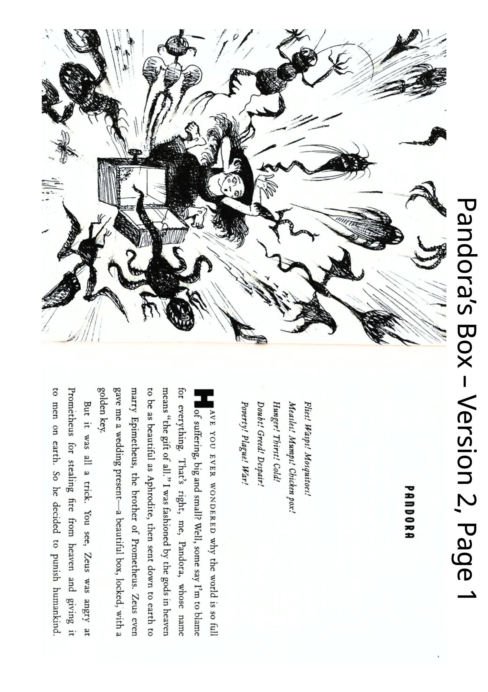
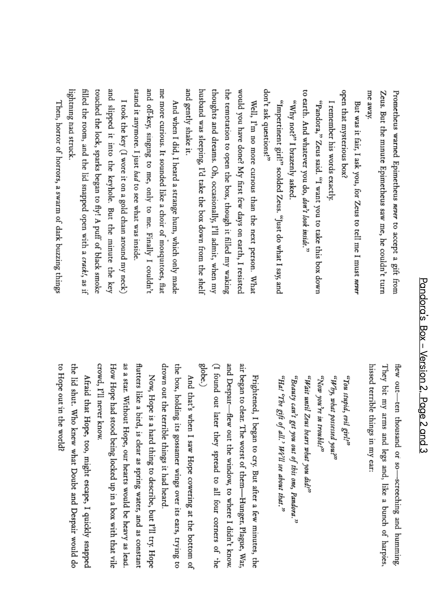

How much energy do you have?
Read PAGE 1 of the school's second version of Pandora's Box.

Start with what you remember. Use your own words.
Page 1
Pages 2 and 3

Find Despair in the original story. What might it mean?
Use your story map to tell the beginning, problem, actions, ending and lesson.
In the beginning…
The problem is…
Because of this…
In the end…
The lesson is…
companion · pity · sorrow · misery · despair · endure
Close the story map and hints. Tell your teacher: What is the problem? How does it end? What is the lesson?
记录真实观察；未检查的迁移不算通过。支架按钮的使用记录不等于学生需要的支持程度。
撤架：句子开头 → 原文定位 → 一个问题 → 独立回到学校图。若仍卡住，只处理观察到的层级。